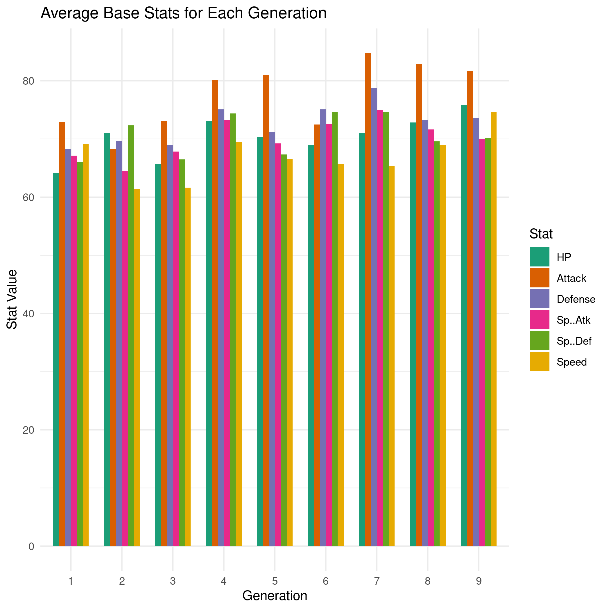
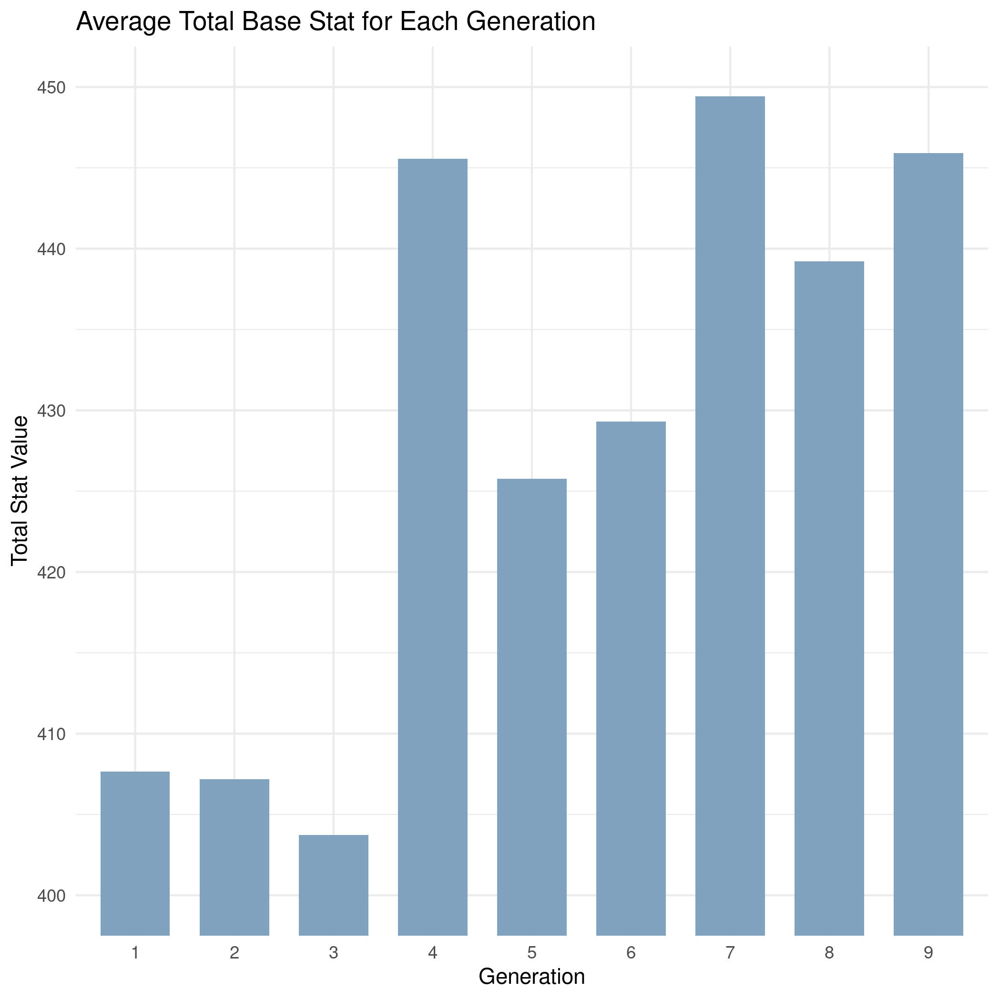
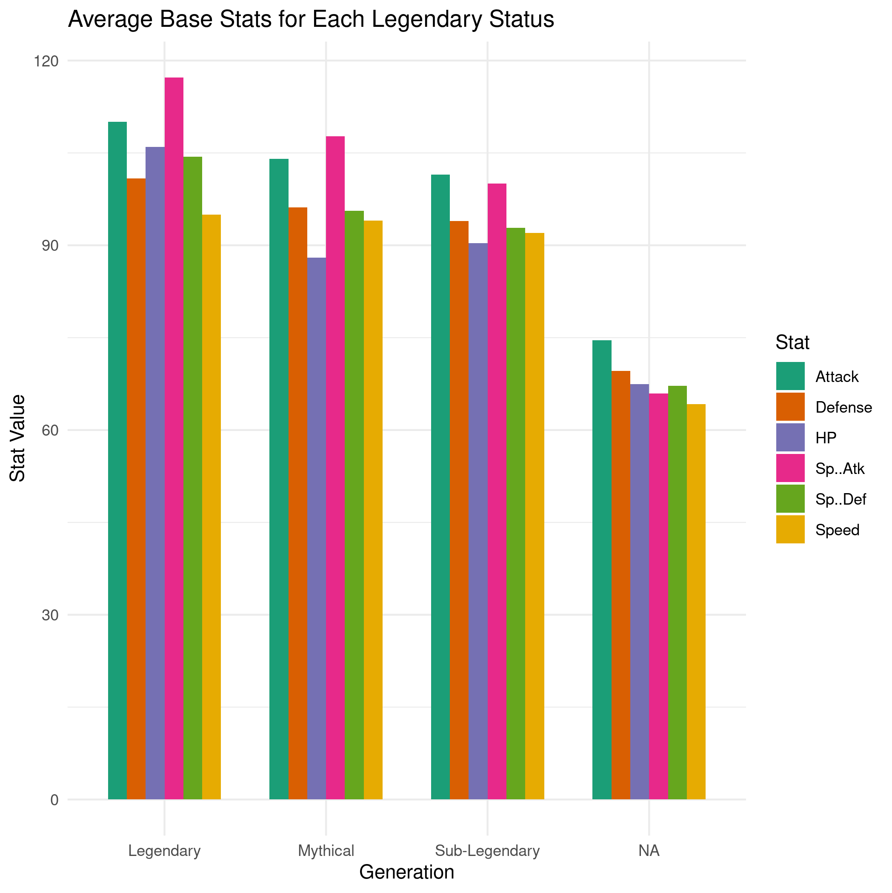
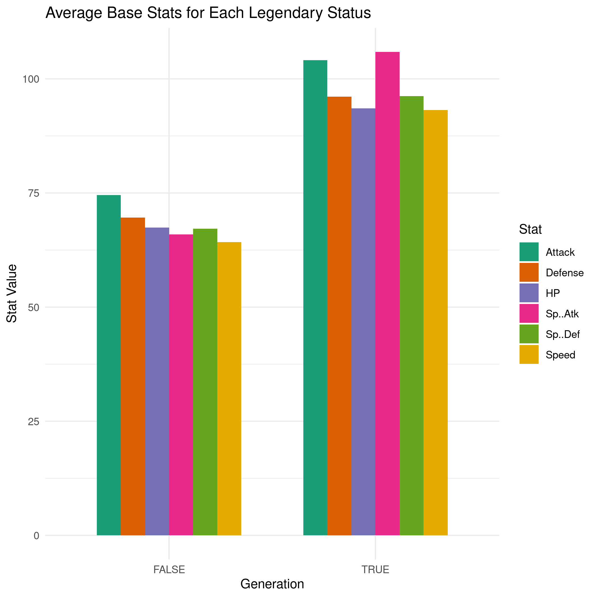
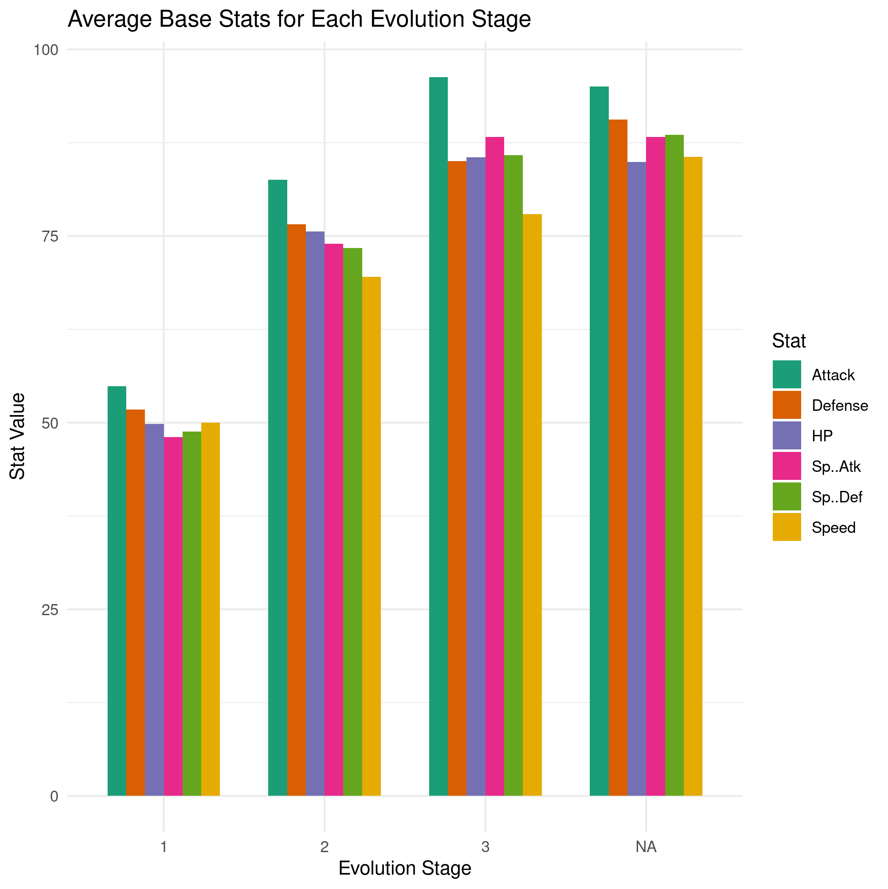
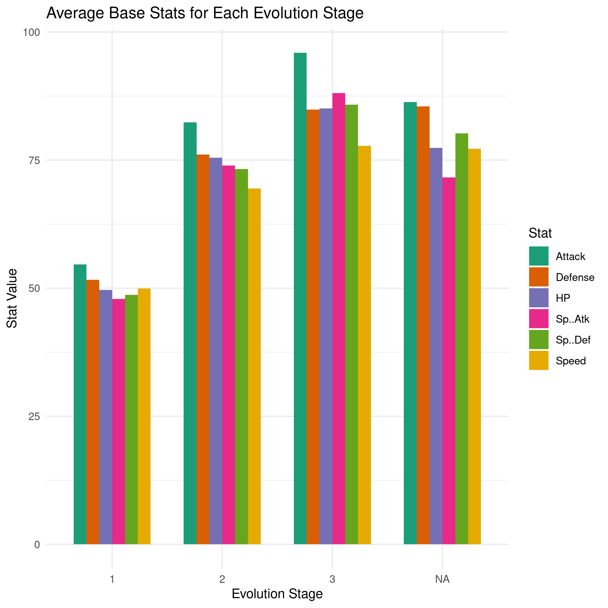

¶Introduction
Here, we investigate some of the Pokemon battle stats data.
¶Load Libraries
Start off by loading the libraries we need.
# Load libraries library(dplyr) library(tidyr) library(ggplot2)
¶Read and Format Data
Read in the data we scraped in the previous steps. We also need to make sure to set some column types in order to group and summarize the data. The Generation and Evolution.Place columns are categorical, and the Has.Evolution column is boolean, so we need to specify those column types.
# Read the data pokedex <- read.csv('~/Projects/pokedex/data/pokedex_ext.csv',sep=',') # Change categorical columns pokedex$Generation <- as.factor(pokedex$Generation) pokedex$Evolution.Place <- as.factor(pokedex$Evolution.Place) pokedex$Has.Evolution <- as.logical(pokedex$Has.Evolution) # Show Pokedex data head(pokedex)
| Number | Name | URLs | Type.1 | Type.2 | Species | Height | Weight | HP | Attack | Defense | Sp..Atk | Sp..Def | Speed | Total | Type.3 | Has.Evolution | Evolution.Place | Maximum.Evolution.Count | Evolution.Index | Generation | Legendary.Status |
|---|---|---|---|---|---|---|---|---|---|---|---|---|---|---|---|---|---|---|---|---|---|
| 1 | Bulbasaur | https://pokemondb.net/pokedex/bulbasaur | Grass | Poison | Seed Pokémon | 0.7 | 6.9 | 45 | 49 | 49 | 65 | 65 | 45 | 318 | TRUE | 1 | 3 | 0.33 | 1 | ||
| 2 | Ivysaur | https://pokemondb.net/pokedex/ivysaur | Grass | Poison | Seed Pokémon | 1 | 13 | 60 | 62 | 63 | 80 | 80 | 60 | 405 | TRUE | 2 | 3 | 0.67 | 1 | ||
| 3 | Venusaur | https://pokemondb.net/pokedex/venusaur | Grass | Poison | Seed Pokémon | 2 | 100 | 80 | 82 | 83 | 100 | 100 | 80 | 525 | TRUE | 3 | 3 | 1 | 1 | ||
| 4 | Charmander | https://pokemondb.net/pokedex/charmander | Fire | Lizard Pokémon | 0.6 | 8.5 | 39 | 52 | 43 | 60 | 50 | 65 | 309 | TRUE | 1 | 3 | 0.33 | 1 | |||
| 5 | Charmeleon | https://pokemondb.net/pokedex/charmeleon | Fire | Flame Pokémon | 1.1 | 19 | 58 | 64 | 58 | 80 | 65 | 80 | 405 | TRUE | 2 | 3 | 0.67 | 1 | |||
| 6 | Charizard | https://pokemondb.net/pokedex/charizard | Fire | Flying | Flame Pokémon | 1.7 | 90.5 | 78 | 84 | 78 | 109 | 85 | 100 | 534 | TRUE | 3 | 3 | 1 | 1 |
¶Show Stats by Generation
First, I’m curious if there’s any obvious trend on average for each generation. To do so, we group by the Generation column and get the mean for the HP, Attack, Defense, Sp..Atk, Sp..Def, and Speed columns. To plot them easily, we’ll pivot the data from wide to long for each stat and specify that the new stat column is a factor.
# Get the stats of Pokemon by generation gen_stats <- pokedex %>% group_by(Generation) %>% summarize_at(vars(HP:Speed),mean) %>% pivot_longer(-1,names_to="Stat",values_to="Value") # Specify Stat as a factor and set order gen_stats$Stat <- factor(gen_stats$Stat, levels=c("HP", "Attack", "Defense", "Sp..Atk", "Sp..Def", "Speed")) # Plot the generation stats ggplot(gen_stats, aes(x=Generation, y=Value, fill=Stat, ymin=0)) + geom_bar(stat="identity",position="dodge",width=0.7) + scale_fill_brewer(palette="Dark2") + theme_minimal() + ggtitle("Average Base Stats for Each Generation") + xlab("Generation") + ylab("Stat Value") # Save image ggsave("images/stats-generation.png",bg="white")

While it’s not consistently the case for all stats, the mean stats overall appear to increase from generation to generation. Each stat seems to roughly increase with each generation, with the exception of the Special Defense and Speed stats.
Let’s look instead at the total of these stats shown in the Total column.
gen_stats <- pokedex %>% group_by(Generation) %>% summarize_at(vars(Total),mean) # Plot the generation stats ggplot(gen_stats, aes(x=Generation, y=Total)) + geom_bar(stat="identity",position="dodge",width=0.7,fill="#81a2be") + scale_fill_brewer(palette="Dark2") + coord_cartesian(ylim=c(400,450)) + theme_minimal() + ggtitle(label="Average Total Base Stat for Each Generation") + xlab("Generation") + ylab("Total Stat Value") # Save image ggsave("images/total-stats-generation.png",bg="white")

We don’t have a ton of generations to make this case, but it does seem to be the case that, generally speaking, Pokemon in later generations are stronger than Pokemon in previous generations. Interestingly though, this wasn’t the case for the first three generations, and average total stats for generations 4 and 7 were quite high compared to the generations before and after them.
¶Show Stats by Legendary Status
We have four options for the legendary status of Pokemon: non-legendary, sub-legendary, legendary, and mythical. In the games, legendary Pokemon were always a bit over-powered, so I expect the three legendary classes to outshine the non-legendary stats in every category. The mythical Pokemon are usually stronger than non-legendary Pokemon, but I wonder how they will compare to legendary and sub-legendary Pokemon on average.
# Get the stats of Pokemon by legendary status legendary_stats <- pokedex %>% group_by(Legendary.Status) %>% summarize_at(vars(HP:Speed),mean) %>% pivot_longer(-1,names_to="Stat",values_to="Value") # Plot the legendary status stats ggplot(legendary_stats, aes(x=Legendary.Status, y=Value, fill=Stat, ymin=0)) + geom_bar(stat="identity",position="dodge",width=0.7) + scale_fill_brewer(palette="Dark2") + theme_minimal() + ggtitle(label="Average Base Stats for Each Legendary Status") + xlab("Generation") + ylab("Stat Value") # Save image ggsave("images/legendary-stats.png",bg="white")

And of course, non-legendary Pokemon (“NA”) are pretty out-classed by legendary, mythical, and sub-legendary Pokemon. Interestingly, mythical Pokemon like Mew are, on average, comparable to sub-legendary Pokemon, but still get over-powered by legendary Pokemon.
Next, I want to group all of the different legendary Pokemon categories and compare them against the non-legendary Pokemon average stats. The results here won’t be surprising, of course, but I wanted to add it just to further show how out-classed the non-legendary Pokemon are.
# Add a column identifying if the Pokemon has a legendary status pokedex$Is.Legendary <- !is.na(pokedex$Legendary.Status) # Get the stats of Pokemon by legendary status legendary_stats <- pokedex %>% group_by(Is.Legendary) %>% summarize_at(vars(HP:Speed),mean) %>% pivot_longer(-1,names_to="Stat",values_to="Value") # Plot the legendary status stats ggplot(legendary_stats, aes(x=Is.Legendary, y=Value, fill=Stat, ymin=0)) + geom_bar(stat="identity",position="dodge",width=0.7) + scale_fill_brewer(palette="Dark2") + theme_minimal() + ggtitle(label="Average Base Stats for Each Legendary Status") + xlab("Generation") + ylab("Stat Value") ggsave("images/legendary_stats_2.png",bg="white")

And again of course, legendary Pokemon way out-shine the non-legendary Pokemon.
¶Show Stats by Evolution Status
Next, I wanted to look at the average base stats for Pokemon that are first, second, or third in their evolution status and compare them against Pokemon that don’t evolve at all. I’m curious how non-evolving Pokemon compare to Pokemon that evolve. Typically, if a Pokemon evolves, it gets stronger with each evolution, and most Pokemon evolve once or twice. I would expect that Pokemon in the third link of the evolution chain would be stronger than Pokemon who don’t evolve, but let’s have a look.
Before I do that though, I want to address a mistake when I scraped the data. It’s ultimately not a big deal, but it’s worth highlighting.
| Name | Evolution.Place | Maximum.Evolution.Count | |
|---|---|---|---|
| 133 | Eevee | 1 | 9 |
| 134 | Vaporeon | 2 | 9 |
| 135 | Jolteon | 3 | 9 |
| 136 | Flareon | 4 | 9 |
| 196 | Espeon | 6 | 9 |
| 197 | Umbreon | 7 | 9 |
| 470 | Leafeon | 9 | 9 |
| 471 | Glaceon | 10 | 9 |
| 700 | Sylveon | 12 | 9 |
When I scraped this data set from PokemonDB, I decided that if the part of the page had an evolution tree, the first Pokemon in the tree was the first of the evolution stage, the next was the second, and so on. This assumption breaks down in rare cases, such as the Pokemon Eevee and its evolutions. Most Pokemon follow a progressive chain of evolution, but Eevee is a Pokemon that can evolve into nine different Pokemon. Between this and inconsistent way this is rendered on the page, my way of scraping Pokemon like Eevee is not so great here. This case is quite rare and won’t have much impact, but for
this reason, I should cut off the plot to only show Pokemon with Evolution.Place <= 3. Also, you can see that Evolution.Place skips 5, 8, and 11. This is because Eevee’s evolution chart repeats Eevee in the chain multiple times. Again, this is a weird case, and I won’t worry about it.
Okay, now let’s have a look at the stats for Pokemon in the first, second, third, parts of their evolution cycle compared to the stats for Pokemon that don’t evolve.
# Get the stats of Pokemon by evolution place # Exclude any evolution > 3, as most of those were scraped incorrectly evolution_stats <- pokedex %>% filter(as.numeric(Evolution.Place) <= 3 | is.na(Evolution.Place)) %>% group_by(Evolution.Place) %>% summarize_at(vars(HP:Speed),mean) %>% pivot_longer(-1,names_to="Stat",values_to="Value") # Plot the evolution place stats ggplot(evolution_stats, aes(x=Evolution.Place, y=Value, fill=Stat, ymin=0)) + geom_bar(stat="identity",position="dodge",width=0.7) + scale_fill_brewer(palette="Dark2") + theme_minimal() + ggtitle(label="Average Base Stats for Each Evolution Stage") + xlab("Evolution Stage") + ylab("Stat Value") ggsave("images/evolution-stats.png",bg="white")

Naturally, Pokemon later in their evolutionary cycle are stronger than Pokemon in earlier cycles. Surprisingly though, non-evolving Pokemon appear to be on par with Pokemon who have evolved twice already. That doesn’t match my experience with the games. Pokemon that didn’t evolve at all were solid, but often didn’t compete with Pokemon who’d evolved several times. I wonder if this is because legendary Pokemon typically don’t evolve and typically over-power non-evolutionary Pokemon. Let’s filter out legendary Pokemon to see if that’s the case.
# Get the stats of non-legendary Pokemon by evolution place # Exclude any evolution > 3, as most of those were scraped incorrectly evolution_stats <- pokedex %>% filter(is.na(Legendary.Status)) %>% filter(as.numeric(Evolution.Place) <= 3 | is.na(Evolution.Place)) %>% group_by(Evolution.Place) %>% summarize_at(vars(HP:Speed),mean) %>% pivot_longer(-1,names_to="Stat",values_to="Value") # Plot the evolution place stats ggplot(evolution_stats, aes(x=Evolution.Place, y=Value, fill=Stat, ymin=0)) + geom_bar(stat="identity",position="dodge",width=0.7) + scale_fill_brewer(palette="Dark2") + theme_minimal() + ggtitle(label="Average Base Stats for Each Evolution Stage") + xlab("Evolution Stage") + ylab("Stat Value") ggsave("images/non-legendary-evolution-stats.png",bg="white")

The difference isn’t terribly dramatic, but it does confirm that, on average, Pokemon in their third evolution stage are stronger than Pokemon who don’t evolve at all, assuming all else is equal. In fact, Pokemon who don’t evolve at all hardly outperform Pokemon in their second stage of evolution.